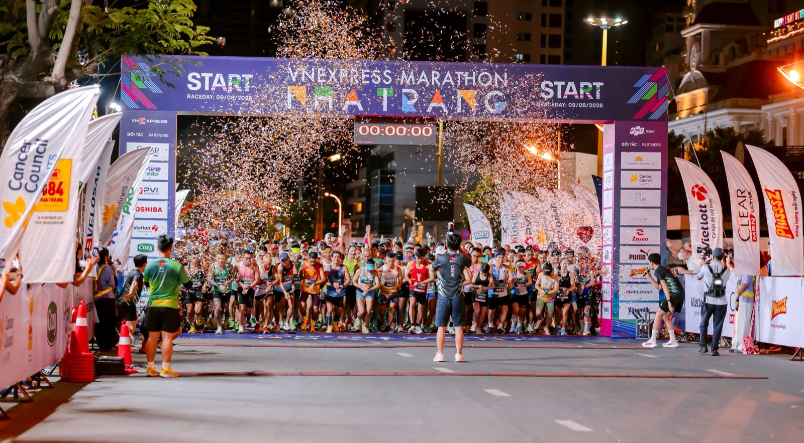
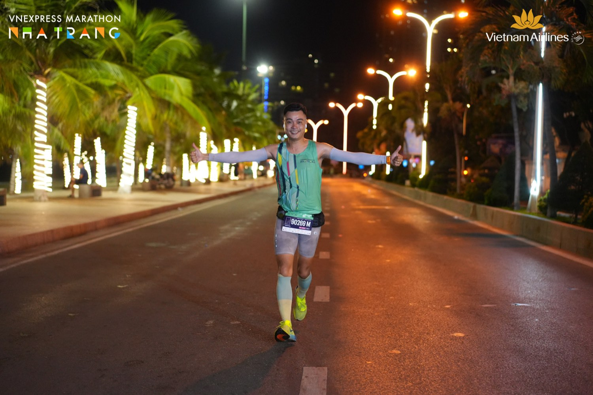
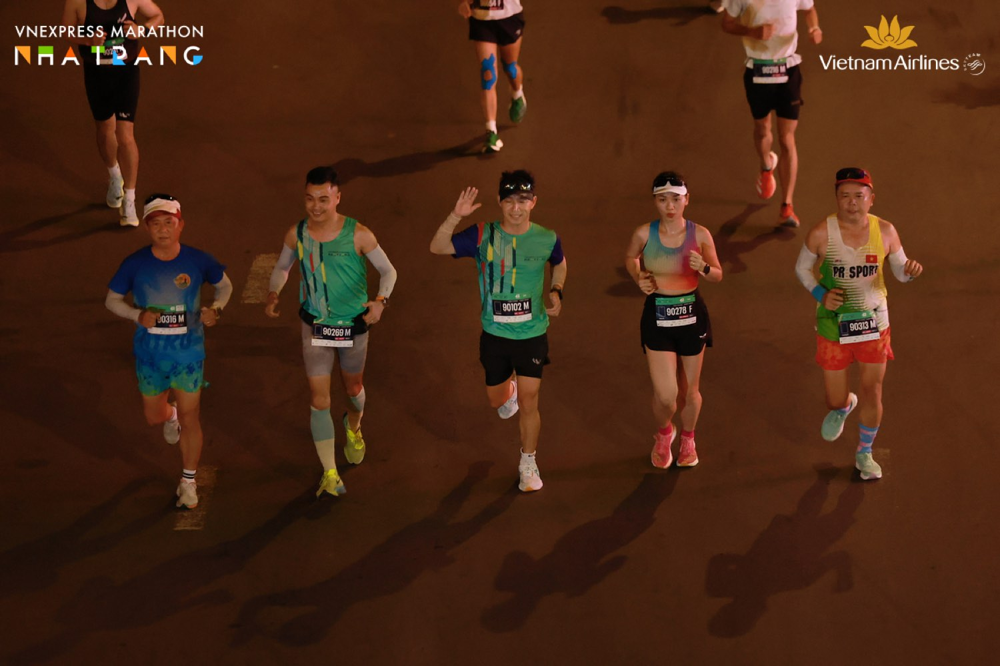
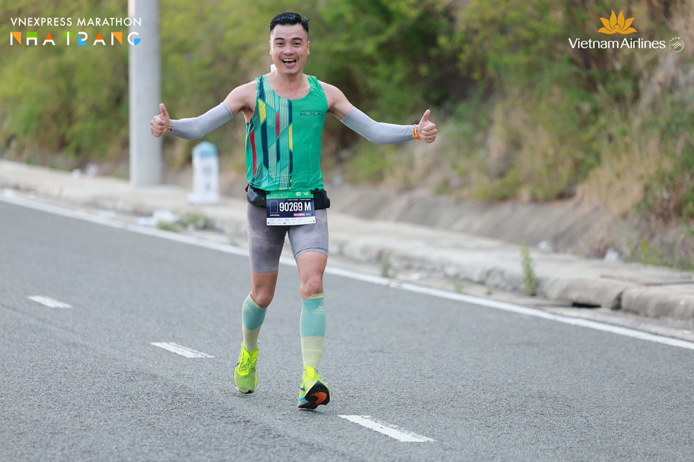

42km đi chào hỏi: VnExpress Marathon trên chính con đường tôi bán nhà
Mười ngày trước, tôi viết trên blog này: "tháng 8 tới là full marathon VnExpress ngay tại Nha Trang… viết ra đây coi như cam kết công khai, để khỏi có đường lùi."

Sáng Chủ nhật 9/8, tôi qua vạch đích cự ly 42km. Thời gian: 5 giờ 35 phút. Không phải con số để khoe — và đây là lý do.
Tôi không chạy để phá kỷ lục
Giải này tôi chọn chạy kiểu fun run — chạy vui, không ép nhịp, không đuổi theo mốc thời gian nào cả. Với người từng hoàn thành trail 35km ba tuần trước đó, đôi chân chưa hồi đủ để đua; mà thật ra tôi cũng không muốn đua.
42km ở Nha Trang, với tôi, là một buổi sáng dài để tận hưởng thành phố mình đang sống — chứ không phải một bài kiểm tra.

42km qua chính con đường tôi bán nhà
Đây là điều chỉ người sống bằng nghề này mới thấy lạ: tôi chạy qua Trần Phú, qua những cây cầu, qua các khu đô thị mà mỗi tuần tôi vẫn chở khách đi xem.
Ban ngày, tôi là người đứng ở đó phân tích cho khách: đoạn này giá bao nhiêu, quy hoạch ra sao, mua thì lời chỗ nào. Còn 4 giờ sáng hôm ấy, tôi đo chính những con đường đó bằng bàn chân mình — không giá, không phân tích, chỉ có tiếng thở và ánh đèn.
Tôi biết rõ từng đoạn đường này đắt rẻ ra sao. Nhưng chạy qua nó lúc trời chưa sáng, tôi thấy thành phố mình đang bán theo một cách hoàn toàn khác.

Đoạn vui nhất: trên đèo, gặp anh em 21km chạy về
Nếu hỏi khoảnh khắc đáng nhớ nhất, tôi không kể chuyện gắng sức. Tôi kể đoạn trên đèo.
Đó là lúc đoàn 42km chúng tôi đang lên, còn anh em cự ly 21km bắt đầu đổ về — hai dòng người ngược chiều nhau trên cùng một con dốc. Và tôi gặp toàn người quen: anh em trong các câu lạc bộ chạy ở Nha Trang, những người vẫn tập cùng nhau mỗi sáng.
Cứ thế, vừa chạy vừa vẫy tay, gọi tên nhau, chào hỏi qua lại. Có người hô "cố lên anh Dũng ơi!", có người chỉ kịp đập tay một cái rồi lướt qua. Đoạn dốc mệt nhất hoá ra lại là đoạn vui nhất.

Và tôi nhận ra: tôi không chạy 42km để về đích. Tôi chạy 42km để đi chào hỏi.
Điều còn lại sau vạch đích
Về nhà, cái tôi giữ không phải con số 5 giờ 35 phút — mà là hai thứ.
Thứ nhất: đã hứa thì làm. Mười ngày trước tôi viết cam kết lên đây cho cả thiên hạ đọc. Hôm qua tôi hoàn thành. Trong nghề của tôi cũng đúng nguyên tắc ấy: nói với khách điều gì thì làm điều đó — kể cả khi điều phải nói là "trường hợp này anh/chị chưa nên mua".
Thứ hai: quan hệ thật là thứ đi cùng mình lâu nhất. Người ta có thể chạy nhanh hơn tôi cả tiếng đồng hồ. Nhưng đoạn đường 42km của tôi có bạn bè hai bên, và đó mới là lý do sáng mai tôi lại xỏ giày lúc trời chưa sáng.
Lộ trình 2026 của tôi đến giờ: ✅ full marathon Tiền Phong · ✅ trail 35km City Trail · ✅ full marathon VnExpress Nha Trang. Còn một chặng cuối: 55km trail Lâm Đồng tháng 11. Lại viết ra đây — lại không có đường lùi.

"Rồi, ngày mới tốt lành nhé."
Sống tử tế · Kiếm tiền hạnh phúc · Cho đi giá trị
Anh/chị cũng chạy ở Nha Trang?
Kể tôi nghe cự ly của anh/chị hôm 9/8 — hoặc rủ tôi một buổi chạy sáng. Tôi ở trên Facebook mỗi ngày, thường là trước 6 giờ sáng.
Theo dõi trên Facebook